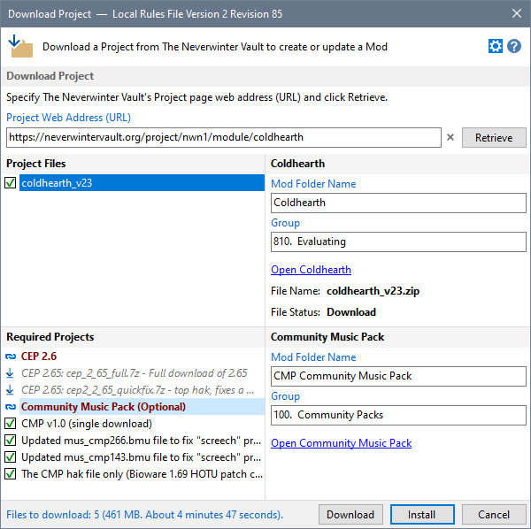
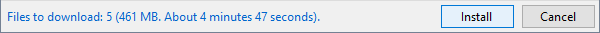
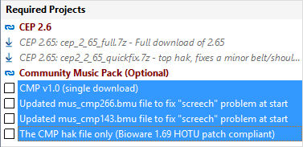
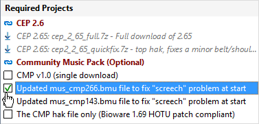
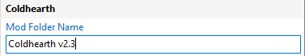
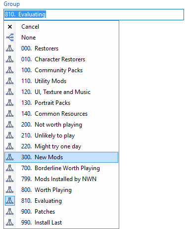
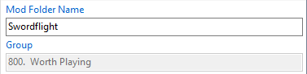
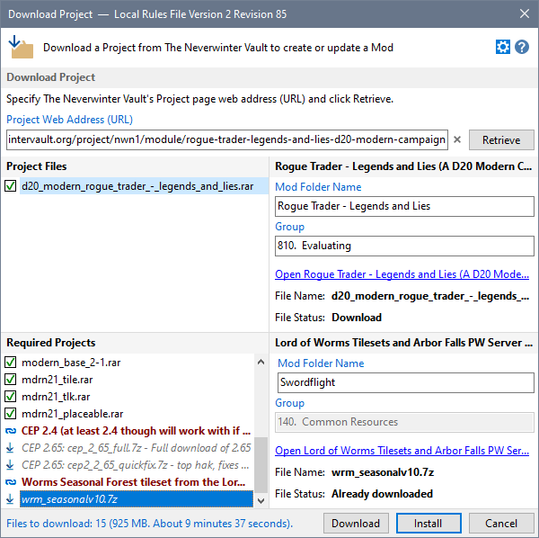
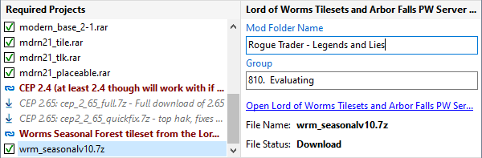

Project page download information is displayed after you click Retrieve.

If you enable Install Mods after Installers have been created on the Preferences page in Advanced Settings, the Download button is not shown.

By default, all Project and Required Project files are marked for download. You can change this by clearing the Tick next to each file name.
For example, the Community Music Pack is described as optional. If you don't want to use these files, select all the files and press the Space Bar.

You can also click the Download Box to toggle whether the file is marked for download.

You can change the Mod name by clicking in the Mod Folder Name box and entering the name you want the Installer Tool to use.

Required Project files assigned to the same Mod folder are changed to reflect the new name.
You can change Group by clicking in the Group box and selecting the Group name you want the Installer Tool to use.

Group names assigned to Required Project Files using the same Mod folder as the Project Files are changed to reflect the new Group name.
You cannot change the Group if the Mod Folder is already defined in your Profile.

There are times when you may want to download a file that has already been downloaded for another Mod. In this example wrm_seasonalv10.7z has already been downloaded for Swordflight.

By changing the Mod name to the same name used for the Project Files, you can ensure that the file will be downloaded and included in the Project File's Mod Folder.

Specify the Neverwinter Vault Project page
Review and customise download information